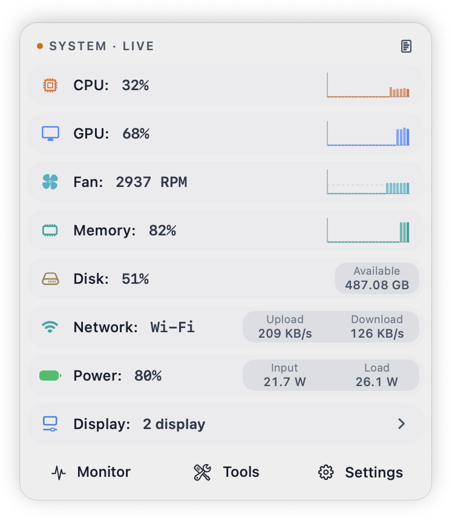
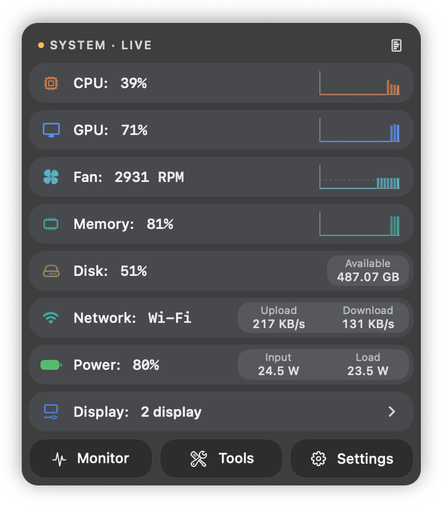
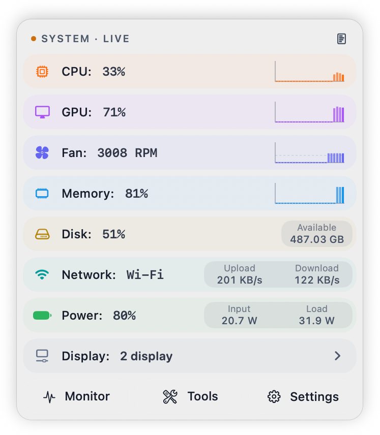
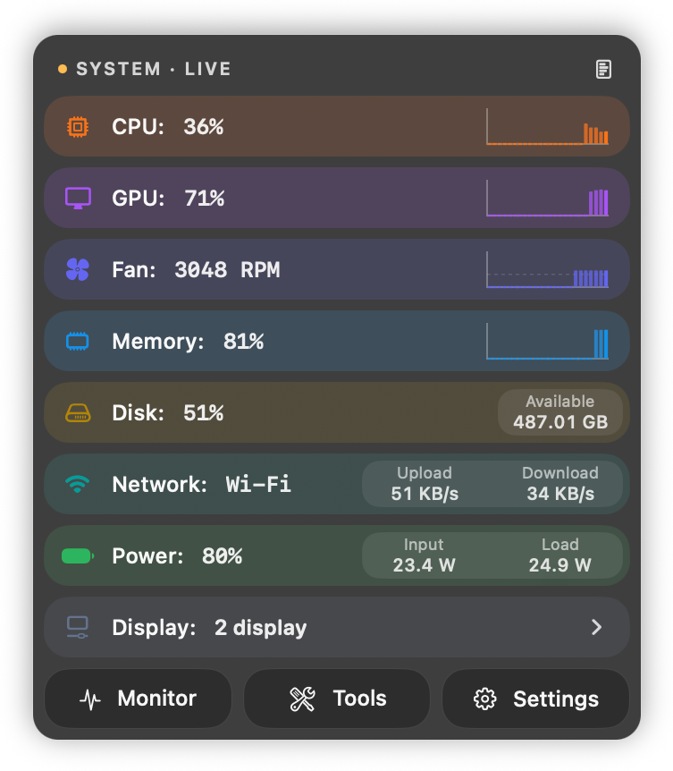

CPU, GPU, memory, storage, network, battery, Bluetooth, and display — a single click on the menu bar reveals a real-time panel with sparklines, usage bars, and top processes, plus built-in statistics reports and quick tools.
Eight live modulesHistorical reportsOne-click controls
Available in the official Homebrew Cask repo · or download the DMG manually
The GitHub version is completely free, with the fastest updates and the most features. The App Store version is a paid download and is sandboxed, so some features may be unavailable. Wait — why pay for a version with fewer features? Honestly, I'd recommend the GitHub version too. The App Store version is my little tip jar. Thanks for your support! (*^▽^*)
The live menu bar monitoring panel
Balanced · Vibrant
Two themes, four appearances
Calm Balanced, or colorful glass Vibrant — each in light and dark. These four previews stay as they are; the feature shots below follow this page's light or dark appearance.

BalancedLight

BalancedDark

VibrantLight

VibrantDark
One Score for System Pressure
The load ring blends CPU, GPU, and memory pressure into a single score via Softmax aggregation. Color shifts with load — green when idle, teal when working, orange when busy, red when stressed.
Icon, text, and compact single-line layouts are there too, with a static width that does not jitter.
Other menu bar styles
IconClassic icon, clean and minimalTextNumeric display for precise readingsCompactNarrower footprint for smaller screens
Lives in the menu bar, barely noticeable
Lightweight Won't Slow Your Mac
Built with native Swift. Throttled sampling and theme caching keep it quietly in the corner — there when you need it, easy to ignore when you don't.
<5%
Idle CPU usage
120fps
Smooth animation cap
1click
Opens the full panel
Expand for the details
Open a row, see that hardware
A click on the menu bar opens the panel. Below are CPU, GPU, memory, storage, network, and power in the Vibrant palette. Bluetooth battery and display info live in the same panel.
Temperature, fan speed, and the storage / network process lists are GitHub direct edition only. The App Store edition cannot read them inside the sandbox.
CPUSystem, user, and idle usage, P/E core groups, thermal pressure, and the process list. Per-core rings and temperature are direct edition only. M6 and M5 Pro/Max show S/P/E groups.GPUGraphics load, render and tiler performance, VRAM, and per-process usage.MemoryUsed memory, pressure, swap, compressed memory, and the processes using the most.StorageSystem disk capacity, read / write rates, and SMART health. Per-process read/write is direct edition only.NetworkUpload and download rates, interface type, Wi-Fi signal, and IP info. Per-process traffic is direct edition only.PowerCharge level, power source, machine and component draw, and how power flows.
Arrange the panel your way
Reorder it yourself
Every module row and metric cell supports long-press drag to reorder, with a floating preview while dragging and live drop placement. A right-click (two-finger click on a trackpad) opens a menu to move a step in any direction, and the order can be restored.
Long-press dragA floating preview while dragging, then it settles where you drop it.
Menu moveRight-click, then step up, down, left, or right.
More than monitoring
Statistics
Runtime samples are aggregated into layers and stored, then shown in a native report with trend curves, heatmaps, a health score, and history. Export a standalone HTML file when you want one.
Native reportHealth score, trend curves, and heatmaps. Defaults to today; switch to 7 days, 30 days, or a year.Statistics settingsTurn recording on, review today, 7 days, and 30 days, and manage local storage.
Settings
Choose what the panel shows
General appearance, which metrics each module expands, quick tools, Game HUD, and About.
GeneralLanguage, light or dark, Balanced or Vibrant, and whether the menu bar shows the load ring or metrics.CPUBar or line chart, which metrics start expanded, and whether the process ranking is shown.Quick ToolsChoose which switches appear in the panel: keyboard lock, sleep prevention, and display awake.Game HUDWhile a game is in front, overlay frame rate and system usage as a top bar or a card, with adjustable background opacity.AboutVersion, update check, release notes, open-source notices, and the anonymous usage toggle.
More capabilities
Quick Tools
Keyboard lock, sleep prevention, and display-awake — toggle them from the panel. Active tools light up in the panel header.
Quick toolsAll three switches live in this panel.
GitHub direct edition only
External display control
The direct edition adjusts brightness, volume, and contrast on external displays over DDC/CI. Whether a control appears depends on the display, cable, and connection; unsupported controls are not shown as available. Display information is in both editions. These controls are not in the App Store edition.
Direct editionBuilt-in display info is in both editions. External brightness, volume, and contrast are direct edition only.
Editions
Two editions, how to choose
The GitHub direct edition is complete. The App Store edition is sandboxed, so some features are unavailable.